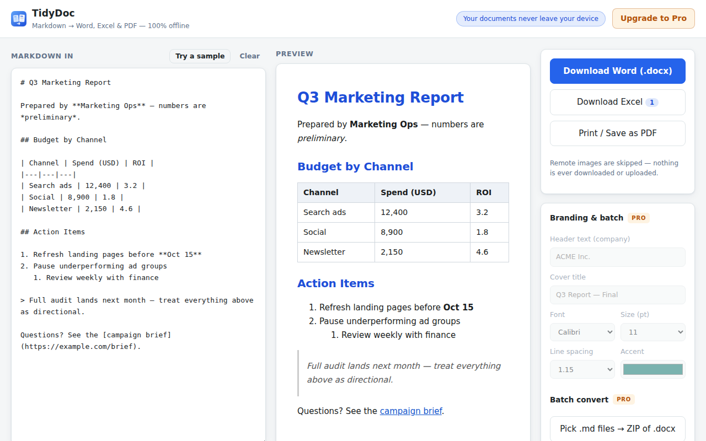

Chrome extension · 100% offline
TidyDoc
Your AI just wrote a great report — as Markdown. Your boss wants Word. TidyDoc is the bridge: paste, preview, download a polished .docx, .xlsx or PDF. The reports AI writes for you are built from your company's data — they should never visit a stranger's server.

Free, unlimited
Markdown → Word
Headings, bold, lists, tables, quotes, links and code blocks come through cleanly as a real .docx.
Tables → Excel
Every table is detected automatically — one sheet each, numbers as real numbers.
Print-ready PDF
One click opens the print dialog with clean document styling.
Truly offline
No server, no upload — remote images are deliberately skipped, not fetched.
Pro — one-time purchase
Your letterhead
Company header and cover title on every document.
House style
Font, size, line spacing and accent color presets.
Batch convert
A folder of .md files becomes a ZIP of Word documents.